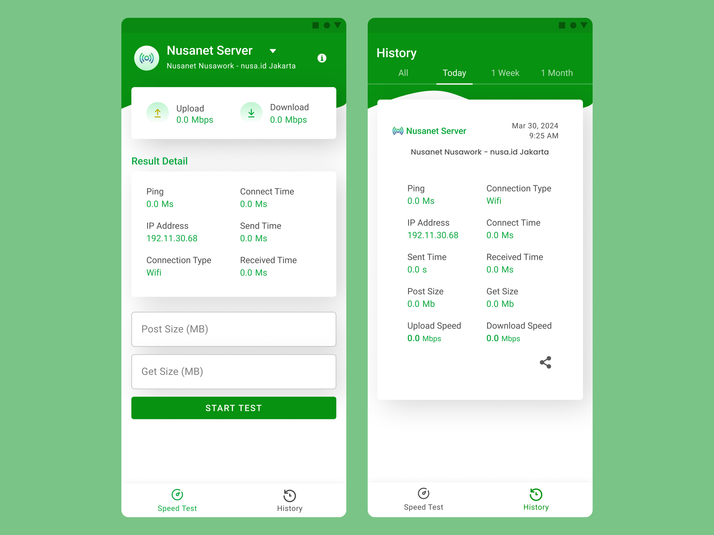

Nusa API Tester Mobile Application
Visit Figma
Project overview
Product Explanation
This application will be used by PT Media Antar Nusa to identify weak points in the process of sending requests to the Nusanet server with the aim of improving latency. The application interface will display various information about the servers, including ping, IP address, sending time, receiving time, and connection time. Currently, the application is still in the development stage.
Duration
The duration for planning this project is 2 weeks.
The Problem
PT Media Antar Nusa requires an application to pinpoint the specific areas of latency in the process of accessing the Nusanet server endpoints, thus enabling a more focused approach to addressing performance issues.
My Role
UX Designer
User research: summary
I have engaged in discussions with the development team to understand their requirements and the issues they aim to address. Based on the outcomes of our discussions, the development team intends to create an application to identify the specific areas of latency in the process of hitting the endpoint to the Nusanet server, with a particular focus on latency. The application will provide test results, including information such as ping, connect time, connection type, send time, receive time, download speed, upload speed, post size, and IP address.
Starting The Design
Paper Wireframe
The aim is to create iterative designs for each screen of the application on paper, ensuring that the elements entering the digital workflow will address user issues effectively.

Digital Wireframe
In the design process, I ensure to base screen designs on feedback and findings from team requests.

Mockups
Takeaways
Impact:
This application assists backend developers in identifying which NusaNet server is experiencing network latency.